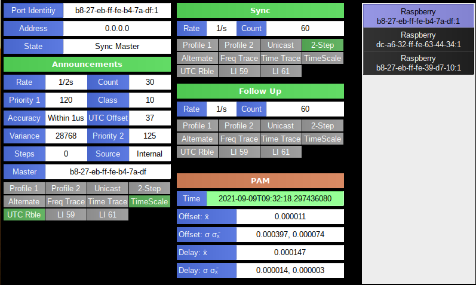
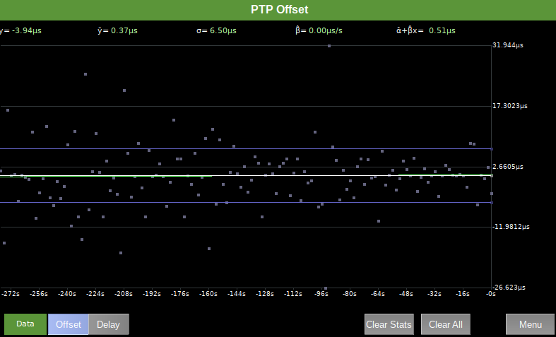

The PTPMonkey plugin shows information about PTP clocks (both slave and master) on the network.
The info page lists the discovered clocks on the network on the right hand side and shows information on the left hand side.
The top left 3 lines show the clock identity, IP address and whether the clock is a master or slave.
Master
If the clock is a master then the section below shows information about the Announcement messages.
The top two right hand sections show information about Sync messages and Follow Up messages (if they are sent).
Slave
If the clock is a slave then the top two right hand sections show information about the Delay Request and Delay Response messages.
The bottom right section always shows information about time messages received by the PAM.
Tapping on the left hand panel will bring up the options met where you can
choose to show either:
The panel described above

Displays a graph either showing the calculated Offset between the PAM system clock and the PTP master or the network delay.
Each calculated value is shown as a grey point.
The white line on the graph shows the average offset.
The blue lines on the graph show the standard deviation from the average offset.
The green line on the graph shows the linear regression calculation.
At the top are a number of values
In Offset Mode
If the frequency of the system clock and the PTP master clock are in sync then β should be 0.
The smaller σ is the more tightly aligned the clocks are.
Displays a histogram either showing the calculated Offset between the PAM system clock and the PTP master or the network delay.
The histogram shows a representation of the distribution of the offset or delay values.
You can change the granularity and resolution of the histogram.
You can scroll the x-axis of the histogram by pressing on it with your finger and moving left or right.
Press the menu button to get back to the main screen.